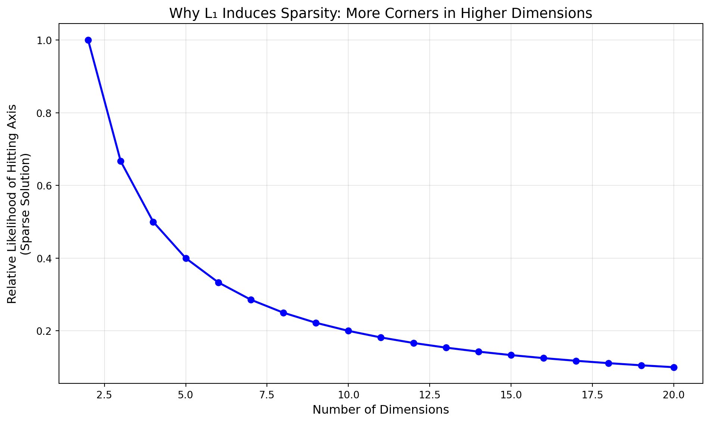
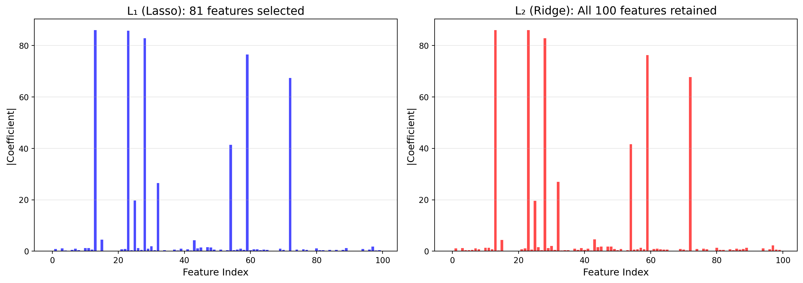

Why can L₁ regularization perform feature selection?
regularization
data-science
machine-learning
lasso
l1
ridge
l2
Author
Derek Allums
Published
October 11, 2025
Introduction
If you’ve ever trained a regression model, you’ve probably heard: “Use L₁ for feature selection, L₂ for handling multicollinearity.” But why does L₁ regularization zero out coefficients while L₂ just makes them smaller? The answer lies in geometry.
Today we’re diving into the geometric intuition behind why L₁ (Lasso) can eliminate features entirely, while L₂ (Ridge) cannot.
The Setup: What Are We Optimizing?
In regularized regression, we’re trying to minimize a loss function plus a penalty term:
Where: - \(\mathcal{L}(\mathbf{w})\) is our loss function (e.g., mean squared error) - \(\lambda\) controls the regularization strength - The penalty differs between L₁ and L₂
L₁: The diamond has corners that lie exactly on the axes. When the loss contours expand outward and touch the constraint region, they’re very likely to hit a corner first — where one or more coefficients are exactly zero.
L₂: The circle has no corners. The loss contours will touch it at some smooth point where all coefficients are small but non-zero.
Why Corners Matter
Think of it this way: in 2D, the L₁ diamond has 4 corners (one on each axis). As you increase dimensions, the number of corners grows exponentially. In \(n\) dimensions, there are \(2n\) corners, each representing a solution where \((n-1)\) coefficients are zero.
The L₂ sphere has no corners in any dimension — it’s perfectly smooth everywhere.
# Probability of hitting a corner vs dimensiondimensions = np.arange(2, 21)# Rough approximation: corners vs total surface area# For L1: 2n corners in n dimensions# For L2: 0 corners# Calculate relative "sparsity inducing" potentiall1_sparsity =2* dimensions # Number of fully sparse cornerstotal_volume = dimensions **2# Rough surface complexitysparsity_probability = l1_sparsity / total_volumeplt.figure(figsize=(10, 6))plt.plot(dimensions, sparsity_probability, 'b-', linewidth=2, marker='o')plt.xlabel('Number of Dimensions', fontsize=12)plt.ylabel('Relative Likelihood of Hitting Axis\n(Sparse Solution)', fontsize=12)plt.title('Why L₁ Induces Sparsity: More Corners in Higher Dimensions', fontsize=14)plt.grid(alpha=0.3)plt.tight_layout()plt.show()

The Gradient Perspective
There’s another way to understand this: look at the gradients.
Notice: L₁’s gradient stays at ±1 no matter how small the weight is, maintaining constant pressure to reach exactly zero. L₂’s gradient weakens as weights shrink, never quite finishing the job.
Real Example: Sparse vs Dense Solutions
Let’s see this in action with actual regression:
from sklearn.linear_model import Lasso, Ridgefrom sklearn.datasets import make_regressionfrom sklearn.preprocessing import StandardScaler# Create a dataset with 100 features, only 10 truly relevantX, y = make_regression(n_samples=200, n_features=100, n_informative=10, noise=10, random_state=42)# Standardizescaler = StandardScaler()X_scaled = scaler.fit_transform(X)# Fit L1 (Lasso) and L2 (Ridge)lasso = Lasso(alpha=0.1, random_state=42)ridge = Ridge(alpha=0.1, random_state=42)lasso.fit(X_scaled, y)ridge.fit(X_scaled, y)# Count non-zero coefficientslasso_nonzero = np.sum(np.abs(lasso.coef_) >1e-5)ridge_nonzero = np.sum(np.abs(ridge.coef_) >1e-5)print(f"L₁ (Lasso): {lasso_nonzero} non-zero coefficients out of 100")print(f"L₂ (Ridge): {ridge_nonzero} non-zero coefficients out of 100")# Visualize coefficient magnitudesfig, (ax1, ax2) = plt.subplots(1, 2, figsize=(14, 5))# Lasso coefficientsax1.bar(range(100), np.abs(lasso.coef_), color='blue', alpha=0.7)ax1.set_xlabel('Feature Index', fontsize=12)ax1.set_ylabel('|Coefficient|', fontsize=12)ax1.set_title(f'L₁ (Lasso): {lasso_nonzero} features selected', fontsize=14)ax1.grid(alpha=0.3, axis='y')# Ridge coefficientsax2.bar(range(100), np.abs(ridge.coef_), color='red', alpha=0.7)ax2.set_xlabel('Feature Index', fontsize=12)ax2.set_ylabel('|Coefficient|', fontsize=12)ax2.set_title(f'L₂ (Ridge): All {ridge_nonzero} features retained', fontsize=14)ax2.grid(alpha=0.3, axis='y')plt.tight_layout()plt.show()
L₁ (Lasso): 81 non-zero coefficients out of 100
L₂ (Ridge): 100 non-zero coefficients out of 100

Lasso aggressively zeros out irrelevant features, while Ridge shrinks everything but keeps all features in play.
When to Use Each
Use L₁ (Lasso) when: - You have many features and suspect most are irrelevant - You want automatic feature selection - Model interpretability matters (fewer features = easier to explain) - You’re okay with potentially discarding correlated features arbitrarily
Use L₂ (Ridge) when: - You have multicollinearity and want to keep all features - Features are all potentially relevant - You don’t need exact zeros in your coefficient vector - You want more stable coefficient estimates
Use Elastic Net when: - You want the best of both worlds (combines L₁ and L₂) - You have groups of correlated features you want to select together
The Bottom Line
L₁ regularization performs feature selection because of geometry: its constraint region has sharp corners on the coordinate axes. When the optimization finds the best solution within this diamond-shaped region, it naturally tends to land on these corners — where coefficients are exactly zero.
L₂’s smooth circular constraint has no such corners, so solutions have small but non-zero coefficients across all features.
It’s a beautiful example of how the shape of a constraint can fundamentally change the nature of solutions you get.
Next week: How Go channels actually work under the hood (spoiler: circular buffers and mutexes).